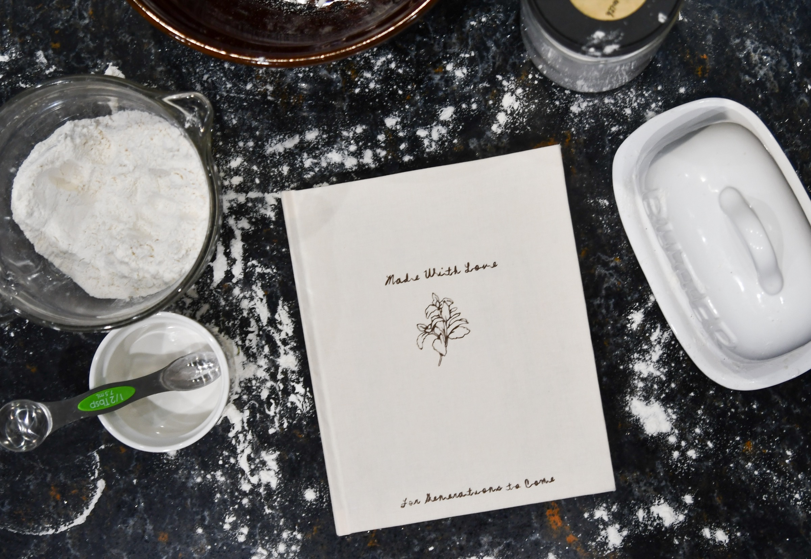
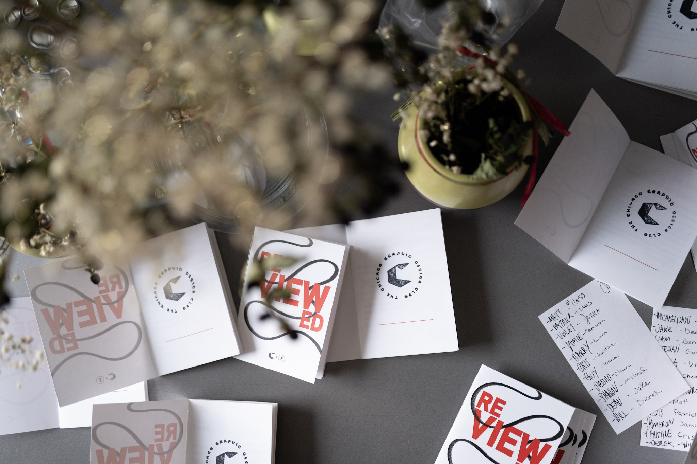
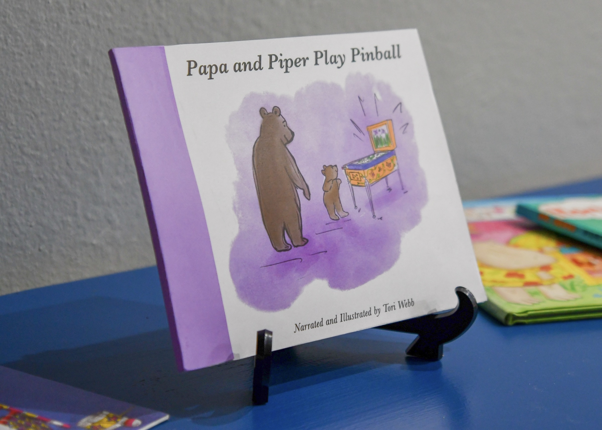

Made with Love
exhibition design
type design
editorial producer
book binding

Reviewed
event design
branding
art direction


Midwestern Mundane
photography
editorial
storytelling


Bold Marks
brand design
logo design
writer & editor

monodot + monodule
type design
animation
Mindful Spending
product design
ui design
ux design
A budgeting app,
made for your needs
made for your needs

It's Cold Here in Rogers Park
photography
zine design
layout


Rooted in Resilience
writer
photography
zine design
storytelling


Sound Solutions
sculpture
mixed media
design


Papa and Piper Play Pinball
illustration
writer
children's book


Designer Brochure
print
layout
research